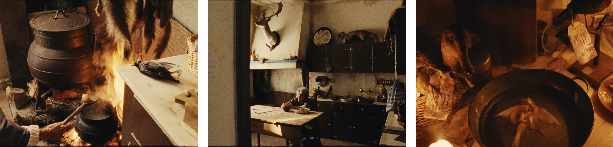
A direção de arte de "Último Canto" constrói um universo visual enraizado no interior rural do sul de Portugal, onde o quotidiano, a memória e a relação com a morte coexistem de forma natural.
Partindo do imaginário alentejano e do universo da taxidermia, desenvolvemos espaços marcados pelo desgaste, pela funcionalidade e pela passagem do tempo.
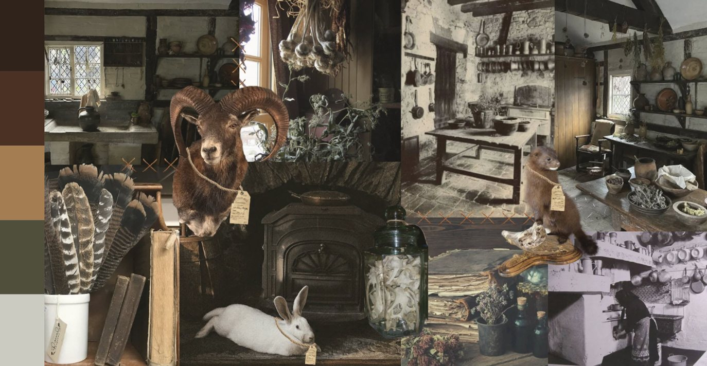
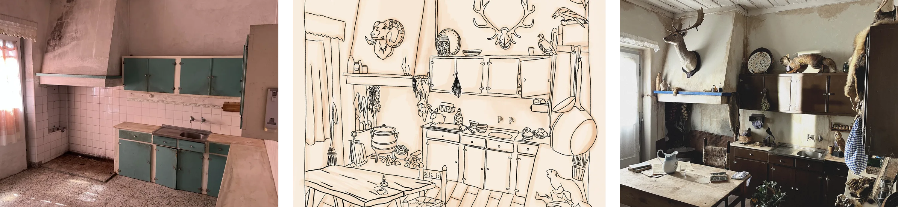
Queríamos que a casa fosse tipicamente rural do sul de Portugal, vivida há décadas e moldada pelo tempo. Muitos dos objetos foram herdados e nada é decorativo, tudo tem uma função.
Os móveis estão gastos, marcados pelo uso, e cada elemento permanece porque pode vir a ser útil um dia. A morte também é normalizada dentro deste espaço. Os animais embalsamados não surgem como algo estranho, mas como uma continuidade dessa lógica rural: guardar, preservar e manter.
Os animais embalsamados não surgem como algo estranho na casa. fazem parte natural daquele universo e da própria lógica de sobrevivência da casa. Cada animal possui uma etiqueta, reforçando a ideia de que Isaltina cuida deles e preserva a sua memória.
Nessas etiquetas, escreve pequenas características de cada animal de forma simples e direta, quase como um arquivo íntimo de fragmentos das suas histórias. Tornam-se corpos catalogados, guardados com atenção, continuidade e permanência dentro do espaço da casa.
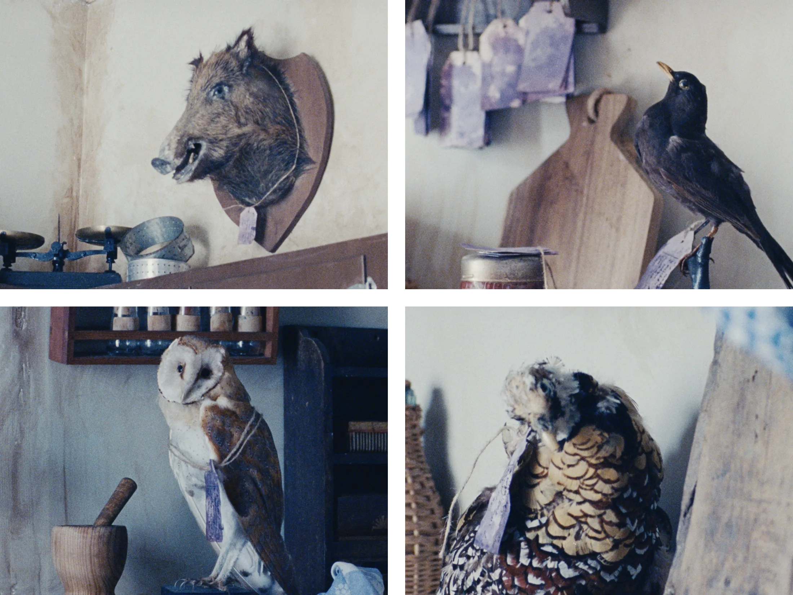
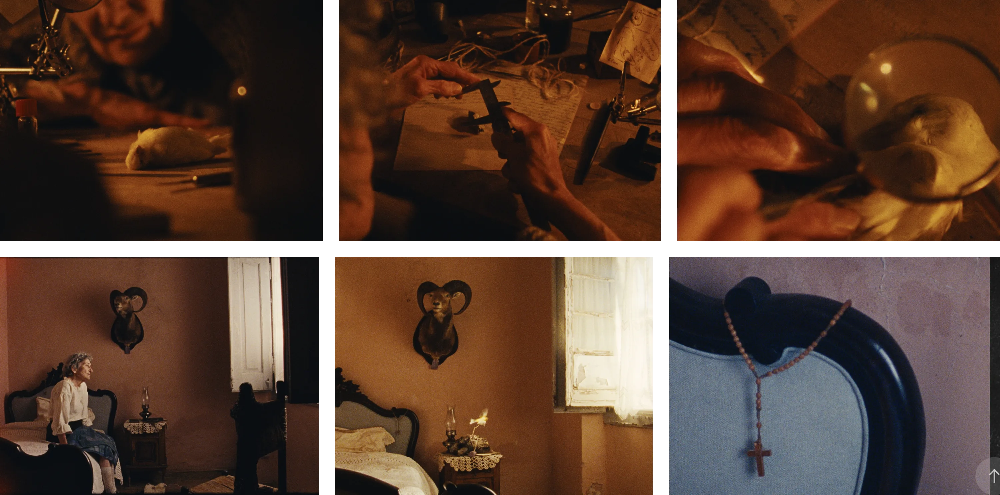
Queríamos um décor mais simplista do que os outros, com menos elementos, mas onde cada um deles já tem uma carga forte o suficiente para o espaço.
Principalmente para sugerir que é um lugar onde ela não passa muito tempo do seu dia, quase como se só o usasse para se preparar para o dia e para dormir.
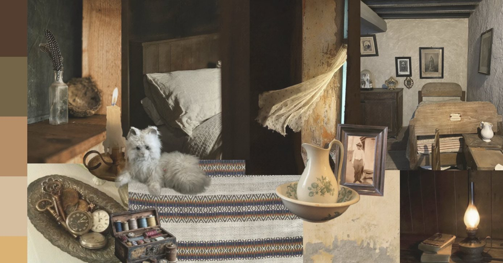
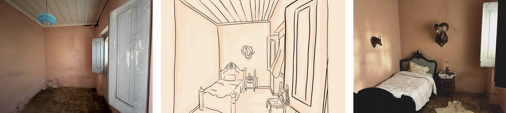
Existe apenas um animal embalsamado no quarto: a cabra-montês. De certa forma, também ela próxima de Isaltina.
É um animal de resistência e sobrevivência autónoma, que sugere independência e adaptação. Carrega uma força contida e uma dureza própria, onde a obstinação e a verticalidade se tornam traço dominante.
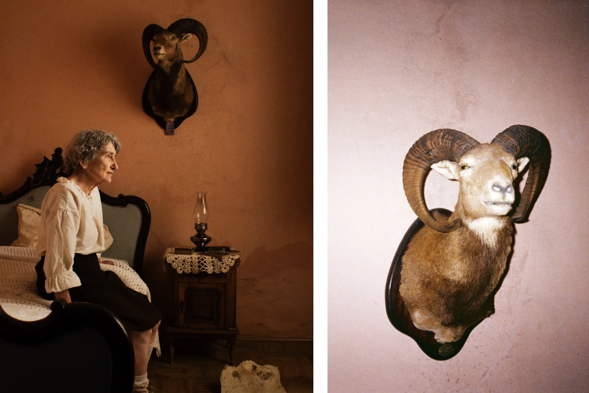
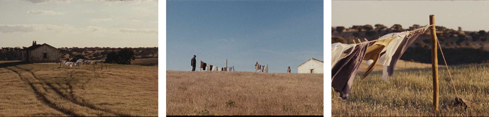
A ideia era criar vários estendais no exterior da casa da Isaltina, inspirados na fotografia de Artur Pastor. A presença da roupa estendida ajuda a construir uma imagem lírica e poética da paisagem, trazendo movimento e textura ao espaço através do vento e dos tecidos.
A escolha de tecidos leves e naturais, numa paleta de cores claras e ligeiramente desbotadas, reforça o contexto rural e a sensação de uso constante. Ao mesmo tempo, a quantidade de roupa tambem sugere a rotina da própria Isaltina: alguém que passa muito tempo em casa a lavar, tratar e cuidar da roupa, num quotidiano marcado pelo trabalho doméstico e pela relação com os animais e com a casa.
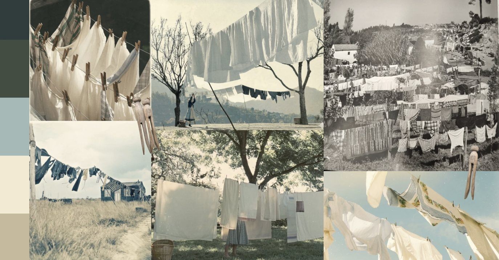
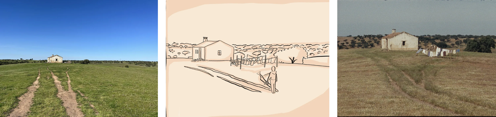
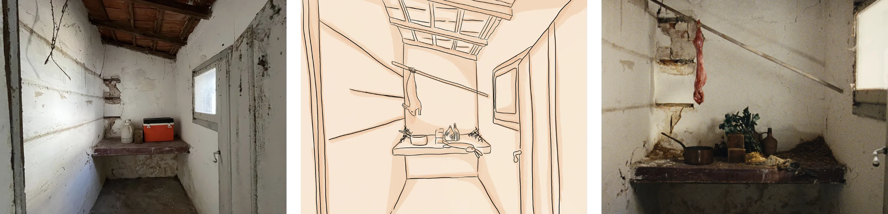
[texto da proposta visual da despensa]
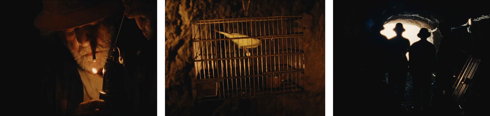
Sendo a gaiola com o canário o primeiro plano da curta-metragem, tornou-se essencial encontrar uma peça realista e visualmente marcante, capaz de introduzir o universo do filme. Encontrámos uma gaiola feita à mão, com uma aparência envelhecida e artesanal, integrada no contexto rural da narrativa.
A sua estrutura simples e imperfeita reforçou a sensação de autenticidade e fragilidade presente no projeto. Simbolicamente.
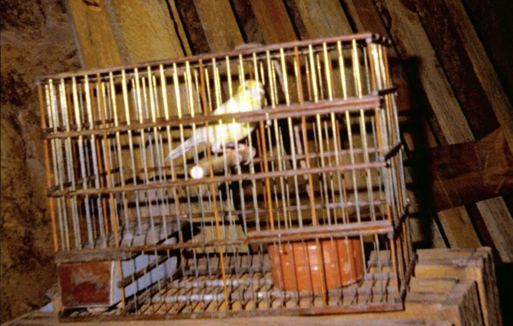
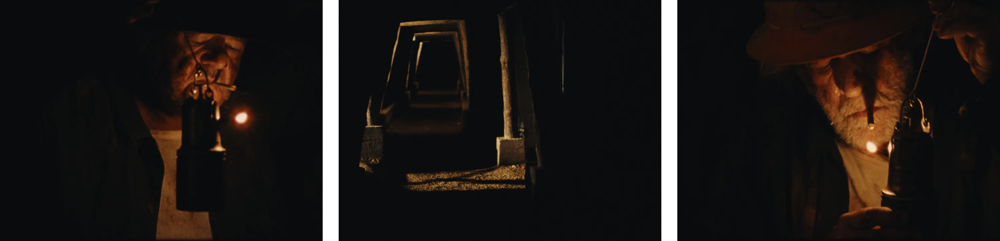
A lâmpada de carbureto foi durante muitos anos uma das principais fontes de luz utilizadas nas minas. Funcionava através da reação entre água e carbureto de cálcio, produzindo uma chama intensa e portátil, essencial para iluminar os túneis subterrâneos. Para além da sua função prática, tornou-se também um símbolo do trabalho mineiro e das condições difíceis vividas pelos trabalhadores nas minas.
Contactámos a Federação Portuguesa de Espeleologia (FPE), que teve a gentileza de nos emprestar uma das suas lâmpadas e de nos ajudar no seu manuseamento durante as gravações, nomeadamente na gestão da chama e no funcionamento do objeto em cena.
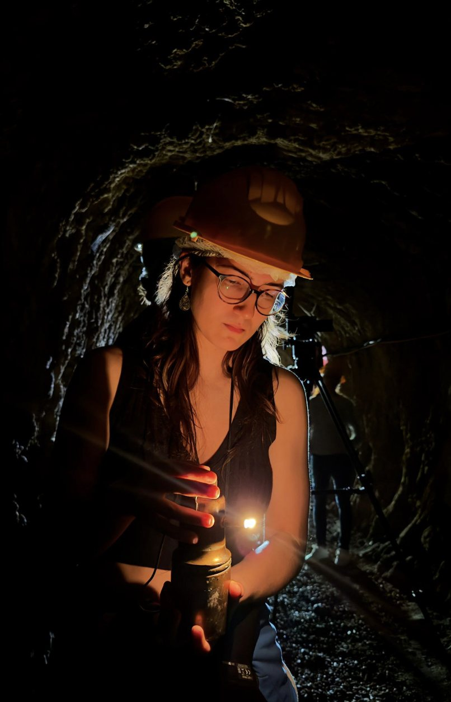
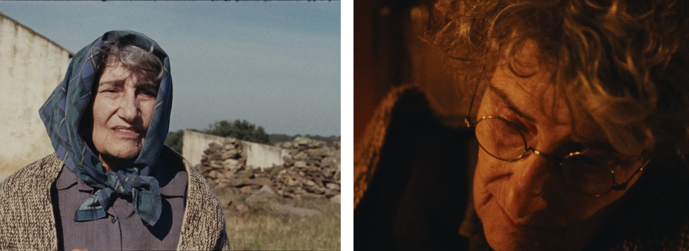
A Isaltina foi pensada como uma mulher típica alentejana: forte, autossuficiente e profundamente ligada à terra, aos animais e à taxidermia. O guarda-roupa acompanha essa identidade: funcional, prático e marcado pela rotina do trabalho.
Trabalhámos com cores fechadas, tecidos pesados e peças simples, onde o avental se torna central por acompanhar todas as áreas do seu quotidiano. Queríamos também transmitir uma sensação de hábito e permanência, como se se vestisse da mesma forma há décadas, reforçando a resistência e a ligação à terra.
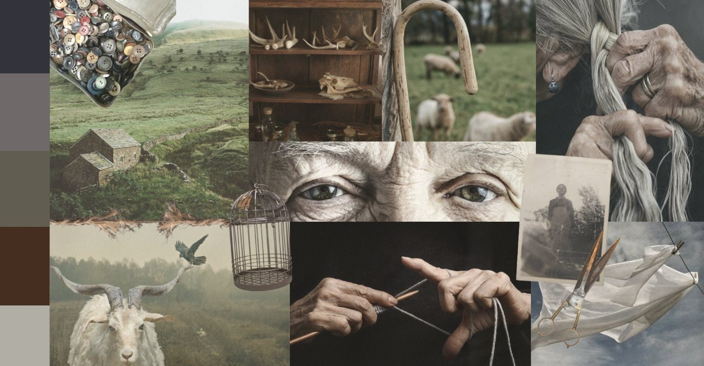
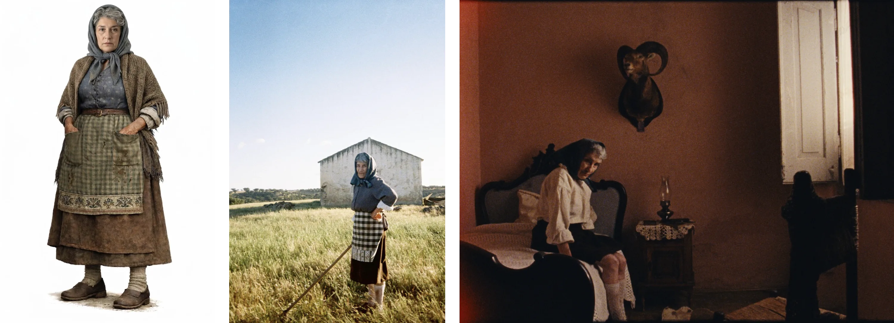
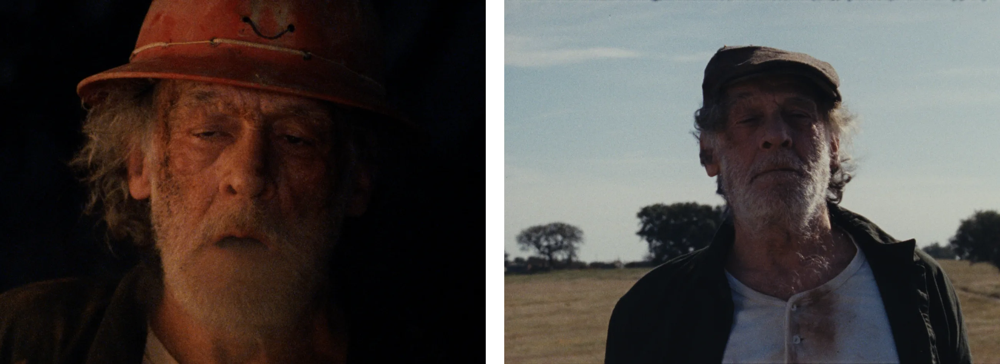
O Leopoldo é um personagem que carrega em si uma comunidade . Ele aparece sempre com roupa de trabalho da mina.
As peças são sujas, gastas, transpiradas, o que sugere um quotidiano duro e repetitivo, onde não há qualquer espaço para preocupação estética.
No fundo, ele e a Isaltina são parecidos nesse sentido: ambos vivem presos a rotinas de trabalho muito físicas e exigentes, ligados à terra, mas expressam isso de formas diferentes.
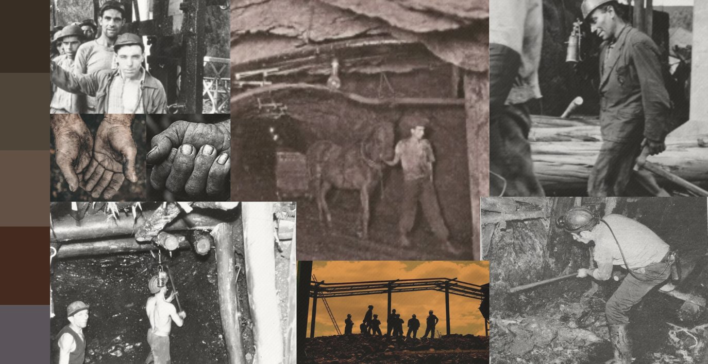
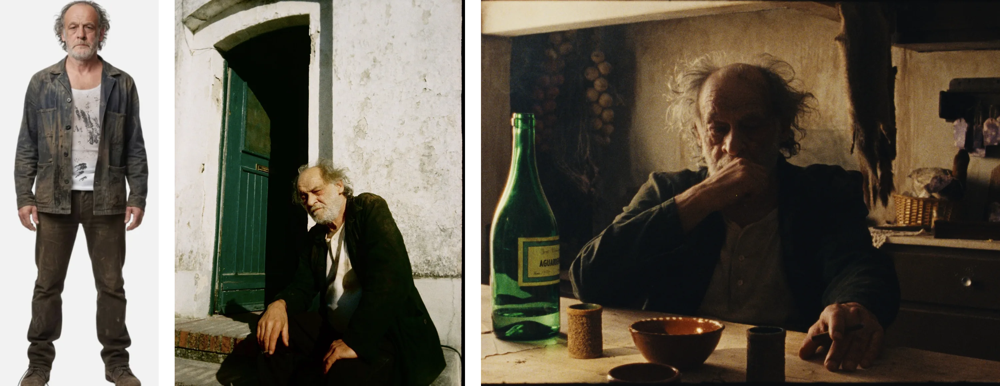